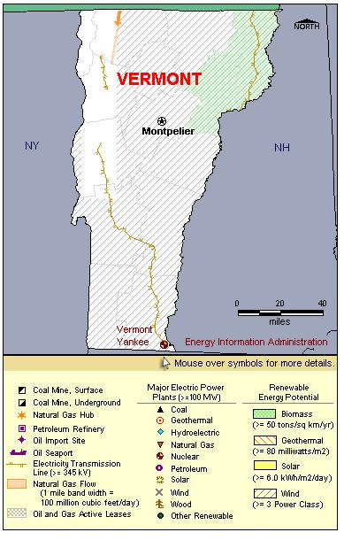

State Overview
There is one operating nuclear power plant in Vermont:
Vermont Yankee in Windham County
- Vermont Yankee is nearing the end of its licensing period. On January 27, 2007, the licensee applied to NRC for a 20-year license extension. An NRC web site provides information on the uprate and other NRC-related issues.
Contribution of Nuclear Power
Vermont Yankee represents over half of Vermont’s total electric generating capacity.
Vermont Yankee produces approximately 80% of Vermont’s total generation, making Vermont one of only 6 States where nuclear power is the primary energy source.
Vermont is a net exporter of electricity, exporting 30% more electric energy than it uses.
License Renewals
- Vermont Yankee applied for a 20-year license extension in January 2006. The current license expires March 2012.

|
| Vermont Total Electric Power Industry, Summer Capacity and Net Generation, by Energy Source, 2008 |
| Primary Energy Source |
Summer Capacity
(MW) |
Share of State Total
(Percent) |
Net Generation
(Thousand MWh) |
Share of State Total
(Percent) |
| Nuclear |
620 |
55.0 |
4,895 |
71.8 |
| Hydro and Pumped Storage |
322 |
28.5 |
1,493 |
21.9 |
| Natural Gas |
- |
- |
3 |
* |
| Other Renewable1 |
84 |
7.5 |
425 |
6.2 |
| Petroleum |
101 |
9.0 |
4 |
0.1 |
| Total |
1,127 |
100.0 |
6,820 |
100.0 |
| Vermont Nuclear Power Plants, Summer Capacity and Net Generation, 2008 |
| Plant Name/Total Reactors |
Summer Capacity
(MW) |
Net Generation
(Thousand MWh) |
Share of State Nuclear
Net Generation
(Percent) |
Owner |
Vermont Yankee
Unit 1 |
620 |
4,895 |
100.0 |
Entergy Nuclear Vermont Yankee |
1 Plant
1 Reactor |
620 |
4,895 |
100.0 |
|
|
Plant Profiles
Vermont Yankee Nuclear Power Station
| Vermont Yankee |
| Unit |
Summer Capacity
(MW) |
Net Generation
(Thousand MWh) |
Summer Capacity Factor
(Percent) |
Type |
Commercial Operation Date |
License Expiration Date |
| 1 |
620 |
4,895 |
90.1 |
BWR |
11/30/1972 |
3/21/2012 |
| |
620 |
4,895 |
90.1 |
|
|
|
Operator: Entergy Nuclear Operations
Location and Service Territory: The plant is on a 125-acre site at Vernon, Vermont, in Windham County.
Staffing: 650 employees
Reactor Description: General Electric Type 4 boiling water reactor
Cooling System: Vermont Yankee draws its cooling water from the Connecticut River.
see also:
more annual nuclear statistics
projected electricity capacity to 2035
international
electricity statistics |
|